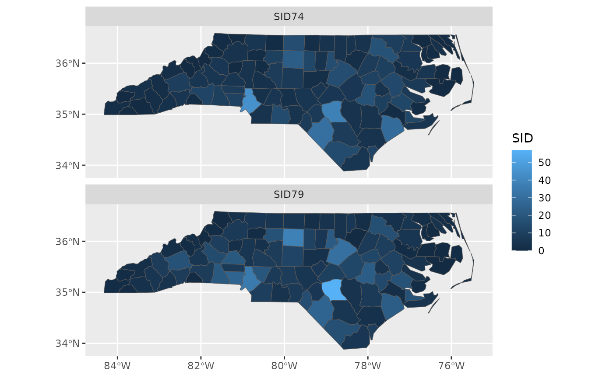

This vignette describes the functions in sf that can help to plot simple features. It tries to be complete about the plot methods sf provides, and give examples and pointers to options to plot simple feature objects with other packages (mapview, tmap, ggplot2).
Plot methods for sf and sfc objects
Geometry only: sfc
Geometry list-columns (objects of class sfc, obtained by the st_geometry method) only show the geometry:
## Linking to GEOS 3.8.0, GDAL 3.0.4, PROJ 6.3.1
demo(nc, ask = FALSE, echo = FALSE)## Reading layer `nc.gpkg' from data source
## `/tmp/Rtmpo4dV5v/temp_libpath410e6b5503b1/sf/gpkg/nc.gpkg'
## using driver `GPKG'
## Simple feature collection with 100 features and 14 fields
## Attribute-geometry relationship: 0 constant, 8 aggregate, 6 identity
## Geometry type: MULTIPOLYGON
## Dimension: XY
## Bounding box: xmin: -84.32385 ymin: 33.88199 xmax: -75.45698 ymax: 36.58965
## Geodetic CRS: NAD27
plot(st_geometry(nc))
which can be further annotated with colors, symbols, etc., as the usual base plots, e.g. points are added to a polygon plot by:
plot(st_geometry(nc), col = sf.colors(12, categorical = TRUE), border = 'grey',
axes = TRUE)
plot(st_geometry(st_centroid(nc)), pch = 3, col = 'red', add = TRUE)## Warning in st_centroid.sf(nc): st_centroid assumes attributes are constant over
## geometries of x
and legends, titles and so on can be added afterwards. border=NA removes the polygon borders.
As can be seen, the axes plotted are sensitive to the CRS, and in case of longitude/latitude coordinates, degree symbols and orientation are added if axes = TRUE.
Geometry with attributes: sf
The default plot of an sf object is a multi-plot of all attributes, up to a reasonable maximum:
plot(nc)## Warning: plotting the first 9 out of 14 attributes; use max.plot = 14 to plot
## all
with a warning when not all attributes can be reasonably plotted. One can increase the maximum number of maps to be plotted by
plot(nc, max.plot = 14)
The row/column layout is chosen such that the plotting area is maximally filled. The default value for max.plot can be controlled, e.g. by setting the global option sf_max.plot:

Color key place and size
In case a single attribute is selected, by default a color key is given the side of the plot where it leaves as much as possible room for the plotted map; for nc this is below:
plot(nc["AREA"])
but this can be controlled, and set to a particular side (1=below, 2=left, 3=above and 4=right):
plot(nc["AREA"], key.pos = 4)
The size of a color key can be controlled, using either relative units (a number between 0 and 1) or absolute units (like lcm(2) for 2 cm):

Keys for factor variables are a bit different, as we typically don’t want to rotate text for them:
nc$f = cut(nc$AREA, 10)
plot(nc["f"], axes = TRUE, key.pos = 4, pal = sf.colors(10), key.width = lcm(4.5))
Class intervals
color breaks (class intervals) can be controlled by plot arguments breaks and nbreaks. nbreaks specifies the number of breaks; breaks is either a vector with break values:

or breaks is used to indicate a breaks finding method that is passed as the style argument to classInt::classIntervals. Its default value, pretty, results in rounded class breaks, and has as a side effect that nbreaks may be honoured only approximately. Other methods include "equal" to define the data range into "nbreaks" equal classes, "quantile" to use quantiles as class breaks, and "jenks", used in other software.
plot(nc["AREA"], breaks = "jenks")
How does sf project geographic coordinates?
Package sf plots projected maps in their native projection, meaning that easting and northing are mapped linearly to the x and y axis, keeping an aspect ratio of 1 (one unit east equals one unit north). For geographic data, where coordinates constitute degrees longitude and latitude, it chooses an equirectangular projection (also called equidistant circular), where at the center of the plot (or of the bounding box) one unit north equals one unit east.
Proj.4 also lets you project data to this projection, and the plot of
plot(st_geometry(nc), axes = TRUE)
should, apart from the values along axes, be otherwise identical to
lat_ts = mean(st_bbox(nc)[c(2,4)]) # latitude of true scale
eqc = st_transform(nc, paste0("+proj=eqc +lat_ts=", lat_ts))
plot(st_geometry(eqc), axes = TRUE)
Graticules
Graticules are grid lines along equal longitude (meridians) or latitude (parallels) that, depending on the projection used, often plot as curved lines on a map, giving it reference in terms of longitude and latitude. The sf function st_graticule tries to create a graticule grid for arbitrary maps. As there are infinitely many projections, there are most likely many cases where it does not succeed in doing this well, and examples of these are welcomed as sf issues.
The following plot shows a graticule geometry on itself,
library(maps)
usa = st_as_sf(map('usa', plot = FALSE, fill = TRUE))
laea = st_crs("+proj=laea +lat_0=30 +lon_0=-95") # Lambert equal area
usa <- st_transform(usa, laea)
g = st_graticule(usa)
plot(st_geometry(g), axes = TRUE)
where we see that the graticule does not reach the plot boundaries (but is cut off at the bounding box of usa), and that the axes show projected coordinates.
When we compute the graticule within the plotting function, we know the plotting region and can compute it up to the plot margins, and add axes in graticule units:
plot(usa, graticule = TRUE, key.pos = NULL, axes = TRUE)
We can also pass a crs object to graticule to obtain a graticule in a datum different from the default (WGS84). st_graticule takes parameters, and we can pass an object returned by it to the graticule parameter of plot, to get finer control:
g = st_graticule(usa, lon = seq(-130,-65,5))
plot(usa, graticule = g, key.pos = NULL, axes = TRUE,
xlim = st_bbox(usa)[c(1,3)], ylim = st_bbox(usa)[c(2,4)],
xaxs = "i", yaxs = "i")
which still doesn’t look great – completely controlling the plotting region of base plots is not easy.
Plotting sf objects with other packages
grid: st_as_grob
Package sf provides a number of methods for st_as_grob:
methods(st_as_grob)## [1] st_as_grob.CIRCULARSTRING* st_as_grob.COMPOUNDCURVE*
## [3] st_as_grob.CURVEPOLYGON* st_as_grob.GEOMETRYCOLLECTION*
## [5] st_as_grob.LINESTRING* st_as_grob.MULTILINESTRING*
## [7] st_as_grob.MULTIPOINT* st_as_grob.MULTIPOLYGON*
## [9] st_as_grob.MULTISURFACE* st_as_grob.POINT*
## [11] st_as_grob.POLYGON* st_as_grob.sfc*
## [13] st_as_grob.sfc_CIRCULARSTRING* st_as_grob.sfc_LINESTRING*
## [15] st_as_grob.sfc_MULTILINESTRING* st_as_grob.sfc_MULTIPOINT*
## [17] st_as_grob.sfc_MULTIPOLYGON* st_as_grob.sfc_POINT*
## [19] st_as_grob.sfc_POLYGON*
## see '?methods' for accessing help and source codewhich convert simple simple feature objects into grob (“graphics objects”) objects; grobs are the graphic primitives of the grid plotting package. These methods can be used by plotting packages that build on grid, such as ggplot2 (which uses them in geom_sf) and tmap. In addition, st_viewport can be used to set up a grid viewport from an sf object, with an aspect ratio similar to that of base::plot.sf.
ggplot2
contains a geom specially for simple feature objects, with support for graticule white lines in the background using sf::st_graticule. Support is currently good for polygons; for lines or points your milage may vary.
polygons can be colored using aes:
ggplot() +
geom_sf(data = nc, aes(fill = BIR74)) +
scale_y_continuous(breaks = 34:36)
and sets of maps can be plotted as facet plots after rearranging the sf object, e.g. by
##
## Attaching package: 'dplyr'## The following objects are masked from 'package:stats':
##
## filter, lag## The following objects are masked from 'package:base':
##
## intersect, setdiff, setequal, union
library(tidyr)
nc2 <- nc %>% select(SID74, SID79, geom) %>% gather(VAR, SID, -geom)
ggplot() +
geom_sf(data = nc2, aes(fill = SID)) +
facet_wrap(~VAR, ncol = 1) +
scale_y_continuous(breaks = 34:36)
mapview
Package mapview creates interactive maps in html pages, using package leaflet as a work horse. Extensive examples are found here.
library(mapview)
mapviewOptions(fgb = FALSE)
mapview(nc["BIR74"], col.regions = sf.colors(10), fgb = FALSE)gives a map which is interactive: you can zoom and pan, and query features by clicking on them.